Chapter 2. 수식과 연산자¶
'쉽게 풀어쓴 C언어 Express - 천인국' 5장 학습 내용
1절. 수식
2절. 연산자
3절. 비트 연산자
1절. 수식(expression)¶
수식이란?¶
- 상수, 변수, 연산자의 조합이다.
- 연산자와 피연산자로 나누어진다.
2절. 연산자¶
기능에 따른 연산자 분류¶
| 연산자의 분류 | 연산자 | 의미 |
|---|---|---|
| 대입 | = | 오른쪽을 왼쪽에 대입 |
| 산술 | + - * / % | 사칙연산과 나머지 연산 |
| 부호 | + - | 상수 및 변수 앞의 부호 |
| 증감 | ++ -- | 증가, 감소 연산 |
| 관계 | < > == != >= <= | 오른쪽과 왼쪽을 비교 |
| 논리 | && ll ! | 논리적인 AND, OR, NOT |
| 조건 | ? | 조건에 따라 선택 |
| 콤마 | , | 피연산자들을 순차적으로 실행 |
| 비트 단위 연산자 | & l ^ ~ >> << | 비트별 AND, OR, XOR, 반전, 이동 |
| sizeof 연산자 | sizeof | 자료형이나 변수의 크기를 바이트 단위로 반환 |
| 형변환 | (type) | 변수나 상수의 자료형을 변환 |
| 포인터 연산자 | * & [] | 주소 계산, 포인터가 가리키는 곳의 내용 추출 |
| 구조체 연산자 | . -> | 구조체의 멤버 참조 |
피연산자 수에 따른 연산자 분류¶
- 단항 연산자 : 피연산자의 수가 1개
- ++x;
- --y;
- 이항 연산자 : 피연산자의 수가 2개
- x + y;
- x - y;
- 삼항 연산자 : 연산자의 수가 3개
- x ? y : z;
- (참고) 거듭 제곱 연산자는?
- C언어에는 거듭 제곱을 나타내는 연산자가 없다.
- x * x와 같이 단순히 변수를 두 번 곱한다.
나머지 연산자¶
- 나머지 연산자(modulus operator)는 첫 번째 피연산자를 두 번째 피연산자로 나누었을 경우의 나머지를 계산한다.
- 10 % 2는 0이다.
- 5 % 7은 2이다.
- 30 % 9는 3이다.
- 나머지 연산자를 이용한 짝수와 홀수 구분
- x % 2가 0이면 짝수
- 나머지 연산자를 이용한 5의 배수 판단
- x % 5가 0이면 5의 배수
// 나머지 연산자 프로그램
#include <stdio.h>
#define SEC_PER_MINUTE 60 // 1 minute = 60 seconds
int main(void)
{
int input, minute, second;
printf("input seconds : ");
scanf("%d", &input);
minute = input / SEC_PER_MINUTE;
second = input % SEC_PER_MINUTE;
printf("%d seconds is %d minutes %d seconds.\n", input, minute, second);
return 0;
}
부호 연산자¶
- 변수나 상수의 부호를 변경
증감 연산자¶
- 증감 연산자 : ++, --
-
변수 하나의 값을 증가시키거나 감소시키는 연산자이다.
-
(참고) ++x와 x++의 차이

증감 연산자 정리¶
| 증감 연산자 | 의미 |
|---|---|
| ++x | 수식의 값은 증가된 x 값이다. |
| x++ | 수식의 값은 증가되지 않은 원래의 x 값이다. |
| --x | 수식의 값은 감소된 x 값이다. |
| x-- | 수식의 값은 감소되지 않은 원래의 x 값이다. |
복합 대입 연산자¶
- 복합 대입 연산자란 += 처럼 대입 연산자 =와 산술 연산자를 합쳐 놓은 연산자
- 소스를 간결하게 만들 수 있다.
- ex) x += y 는 x = x + y와 같은 의미이다.
| 복합 대입 연산자 | 의미 |
|---|---|
| x += y | x = x + y |
| x -= y | x = x - y |
| x *= y | x = x * y |
| x /= y | x = x / y |
| x %= y | x = x % y |
| x &= y | x = x & y |
| x l= y | x = x l y |
| x ^= y | x = x ^ y |
| x >>= y | x = x >> y |
| x <<= y | x = x << y |
오류 주의¶
- 다음과 같은 수식은 오류이다
- ++x = 10;
- 등호의 왼쪽은 항상 변수여야 한다.
- x + 1 = 20;
- 등호의 왼쪽은 변수만 존재해야 한다.
- x =* y;
- =이 아니라 =를 사용해야 한다.
관계 연산자¶
- 두 개의 피연산자를 비교하는 연산자
- 결과값은 참(1) = true 아니면 거짓(0) = false
| 연산자 | 의미 |
|---|---|
| x == y | x와 y가 같은가? |
| x != y | x와 y가 다른가? |
| x > y | x가 y보다 큰가? |
| x < y | x가 y보다 작은가? |
| x >= y | x가 y보다 크거나 같은가? |
| x <= y | x가 y보다 작거나 같은가? |
#include <stdio.h>
int main(void)
{
int x, y;
1 == 1; // true(1)
1 != 2; // true(1)
2 > 1; // true(1)
x >= y; // if x > y = true(1), or false(0)
}
관계연산자 사용 주의¶
- (x = y)
- y의 값을 x에 대입한다. 이 수식의 값은 x의 값이다.
- (x == y)
- x와 y가 같으면 1, 다르면 0이 수식의 값이 된다.
- (x == y)를 (x = y)로 잘못 쓰지 않도록 주의하자.
- 수학에서처럼 2 < x < 5와 같이 작성하면 잘못된 결과가 나온다.
- ex) 올바른 방법 : (2 < x) && (x < 5)
실수를 비교하는 경우¶
- (1e32 + 0.01) > 1e32
- 양쪽의 값이 같은 것으로 간주되어서 거짓
- (fabs(x-y)) < 0.0001
- 올바른 수식
논리 연산자¶
- 여러 개의 조건을 조합하여 참과 거짓을 따지는 연산자
- 결과값은 참(1) 아니면 거짓(0)
| 연산자 | 의미 |
|---|---|
| x && y | AND 연산, x와 y가 모두 참이면 참, 그렇지 않으면 거짓 |
| x || y | OR 연산, x나 y 중에서 하나라도 참이면 참, 모두 거짓이면 거짓 |
| !x | NOT 연산, x가 참이면 거짓, x가 거짓이면 참 |
AND 연산자 예시¶
- 어떤 회사에서 신입 사원을 채용하는데 나이가 30살 이하이고 토익 성적이 700점 이상이라는 조건을 걸었다고 가정하자.
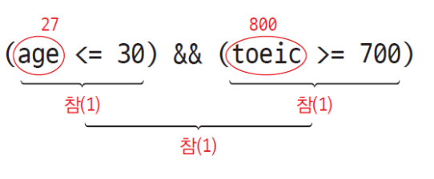
OR 연산자 예시¶
- 신입 사원을 채용하는 조건이 변경되어서 나이가 30살 이하이거나 토익 성적이 700점 이상이면 된다고 하자.
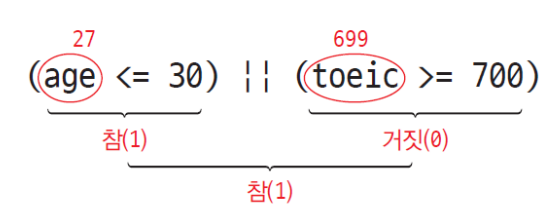
NOT 연산자¶
- 피연산자의 값이 참이면 연산의 결과값을 거짓으로 만들고, 피연산자의 값이 거짓이면 연산의 결과값을 참으로 만든다.
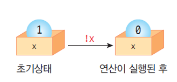
- result = !1; // result에는 0이 대입된다.
- result = !(2 == 3); // result에는 1이 대입된다.
참과 거짓의 표현 방법¶
- 관계 수식이나 논리 수식이 만약 참이면 1이 생성되고 거짓이면 0이 생성된다.
- 피연산자의 참, 거짓을 가릴 때에는 0이 아니면 참이고 0이면 거짓으로 판단한다.
- 음수
- C에서는 0이 아니면 참으로 간주
- 음수도 참으로 간주
- NOT 연산자를 적용하는 경우
- !0;
- 식의 값 = 1
- !3;
- 식의 값 = 0
- !-3;
- 식의 값 = 0
논리 연산자의 예¶
- "x는 1, 2, 3 중의 하나인가?"
- (x == 1) || (x == 2) || (x == 3)
- "x가 60 이상 100 미만이다."
- (x >= 60) && (x < 100)
- "x가 0도 아니고 1도 아니다."
- (x != 0) && (x != 1)
- x는 0도 아니고 1도 아니다.
조건 연산자¶
- 3개의 피연산자를 가지는 삼항 연산자
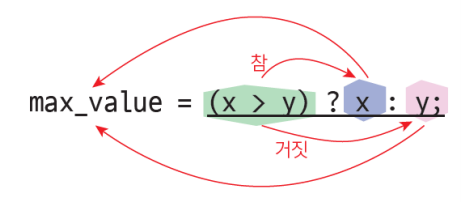
absolute_value = (x > 0) ? x: -x; // 절댓값 계산
max_value = (x > y) ? x: y; // 최댓값 계산
min_value = (x < y) ? x: y; // 최솟값 계산
(age > 20) ? printf("성인\n"): printf("청소년\n"); // 20살 이상이라면 성인을 출력, 20살 미만이라면 청소년을 출력
3절. 비트 연산자¶
비트 연산자¶
- 논리 연산자와 비트 연산자는 다르다.
| 연산자 | 연산자의 의미 | 예 |
|---|---|---|
| & | 비트 AND | 두 개의 피연산자의 해당 비트가 모두 1이면 1, 아니면 0 |
| | | 비트 OR | 두 개의 피연산자의 해당 비트 중 하나라도 1이면 1, 아니면 0 |
| ^ | 비트 XOR | 두 개의 피연산자의 해당 비트의 값이 같으면 0, 아니면 1 |
| << | 왼쪽으로 이동 | 지정된 개수만큼 모든 비트를 왼쪽으로 이동한다. |
| >> | 오른쪽으로 이동 | 지정된 개수만큼 모든 비트를 오른쪽으로 이동한다. |
| ~ | 비트 NOT | 0은 1로 만들고 1은 0으로 만든다. |
비트 AND 연산자¶
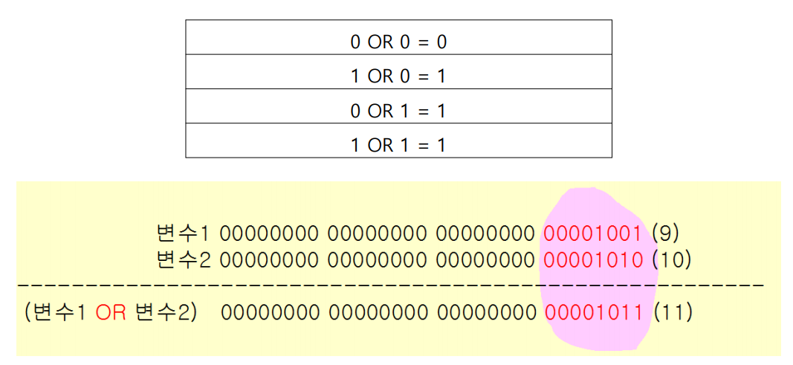
비트 OR 연산자¶
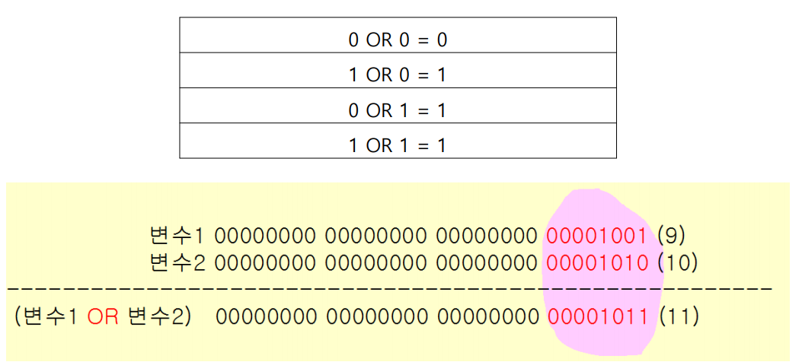
비트 XOR 연산자¶
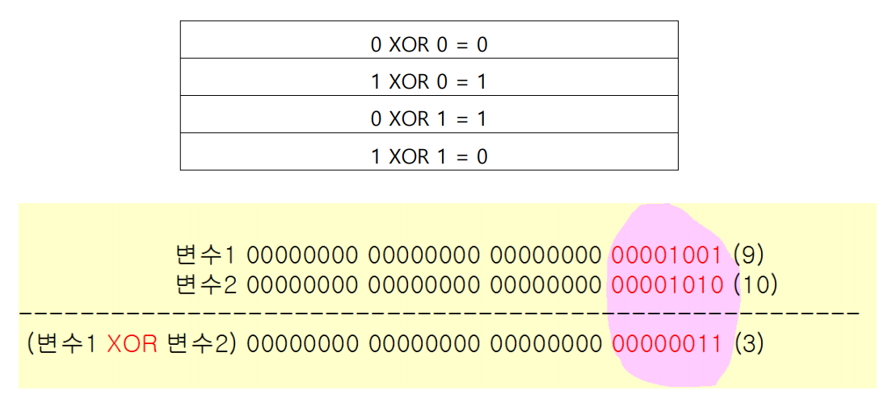
비트 NOT 연산자¶
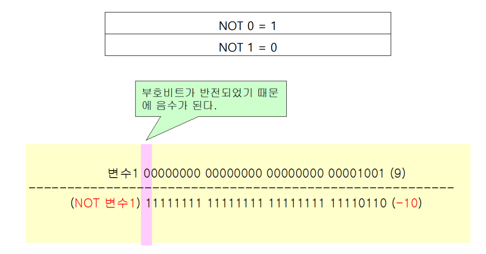
비트 이동 연산자¶
- 크기를 비교하는 관계 연산자와 다르다
| 연산자 | 기호 | 설명 |
|---|---|---|
| 왼쪽 비트 이동 | << | x << y x의 비트들을 y 칸만큼 왼쪽으로 이동 |
| 오른쪽 비트 이동 | >> | x >> y x의 비트들을 y 칸만큼 오른쪽으로 이동 |
<< 연산자¶
- 비트를 왼쪽으로 이동
- 값은 2배가 된다.
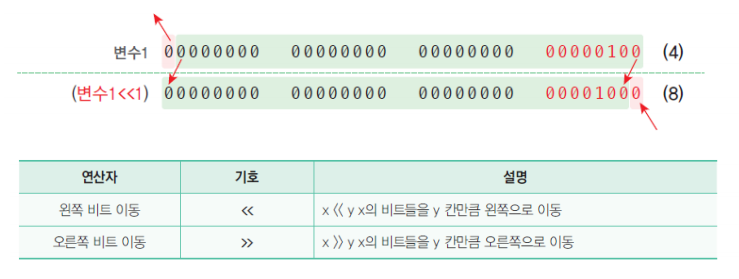
>> 연산자¶
- 비트를 오른쪽으로 이동
- 값은 1/2배가 된다.
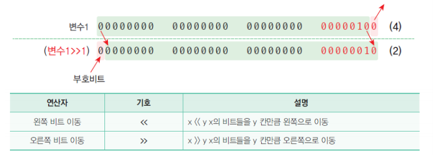
10진수를 2진수로 출력하기¶
- 아래의 예제는 10진수를 2진수로 변환하여 출력하는 예제이다.
- 변수 mask에 1의 값을 저장하고, 왼쪽으로 7비트를 이동시키면 mask = 00000001 에서 mask = 10000000 이 된다.
- 입력하는 10진수를 2진수로 고치면 8비트의 2진수 형태가 되는데, 2진수는 오른쪽부터 2의 0승, 2의 1승, ···, 2의 7승의 비트를 가진다.
- 아래의 과정은 왼쪽으로 7비트 이동시켰던 값을 오른쪽으로 1비트씩 이동시키면서 예시로 입력한 num10에 저장된 수와 0의 위치가 같으면 0을 출력, 만약에 0이 아니라 1이 있으면 1을 출력한다.
- &는 and의 의미를 담고 있는 기호이며, (num10 % mask) == 0이 맞다면 왼쪽의 printf("0")을, 아니라면 printf("1")을 출력하면 된다.
정수 연산 시의 자동적인 형변환¶
- 정수 연산 시 char 형이나 short 형의 경우, 자동적으로 int 형으로 변환하여 계산한다.
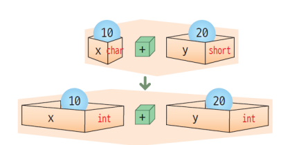